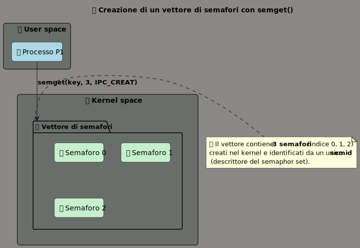

Semaphore
I semafori sono delle risorse IPC, ma il loro valore interno si comporta come una variabile condivisa gestita dal kernel.
Vengono utilizzati per la cooperazione e la competizione tra processi. Due o più processi possono cooperare o competere nell’esecuzione di una sezione critica attraverso l’uso dei semafori affinché non ci siano problemi di sincronizzazione o interferenze.
I processi condividono tra loro una istanza di semaforo s. Tramite questa variabile i processi possono sincronizzarsi sull’utilizzo di una risorsa critica, ovvero una risorsa condivisa.
Un processo più fare generalmente due operazioni su un semaforo s:
signal(s): può inviare un segnale al semaforo e in certe condizioni risvegliare i processi in attesa.wait(s): primitiva che permette ad un processo di assicurarsi la risorsa. Nel caso la risorsa non sia disponibile perché il processo che la possiede non ha ancora inviato un segnalesignal(s), il processo che la richiede si sospende fino a che non riceverà il segnalesignal(s).
MODELLO CONCETTUALE SEMAFORICO:

L’uso classico di un semaforo è per implementare un meccanismo di locking che grantisca la mutua esclusione tra processi.
Possiamo implementare la wait() e la signal() sfruttando quelle che sono le primitive offerte offerte dalla libreria sys/sem.h.
Queste due procedure ci serviranno per delimitare la sezione critica.
Strutture semaforiche nel kernel
Il kernel Linux mantiene due strutture per implementare un semaforo: sem e semid_ds.
In particolare ogni volta che cerchiamo di istanziare un semaforo in realtà stiamo istanziando un array di semafori; puntatore a tale array è contenuto nella struttura semid_ds. Ogni elemento di questo array è una struttura sem che descrive il singolo semaforo.
La struttura sem è definita in linux/sem.h:
struct sem {
short sempid; /* pid of last operation */
ushort semval; /* current value */
ushort semncnt; /* num procs awaiting increase in semval */
ushort semzcnt; /* num procs awaiting semval = 0 */
};
dove:
-
sempidè il PID del processo che ha eseguito l’ultima operazione sus; -
semvalè il valore corrente del semaforo; -
semncntè il numero di processi che sono in attesa che una data risorsa diventi disponibile;(numero di processi che attendono l’incremento del semaforo)
-
semzcntè il numero di processi che sono in attesa che il valore del semaforo sia pari a0
Invece la struttura che contiene l’array di semafori all’interno del sistema è semid_ds.
/* One semid data structure for each set of semaphores in the system. */
struct semid_ds {
struct ipc_perm sem_perm; /* permissions .. see ipc.h */
time_t sem_otime; /* last semop time */
time_t sem_ctime; /* last change time */
struct sem *sem_base; /* ptr to first semaphore in array */
struct wait_queue *eventn;
struct wait_queue *eventz;
struct sem_undo *undo; /* undo requests on this array */
ushort sem_nsems; /* no. of semaphores in array */
};
dove:
-
sem_permè un’istanza della strutturaipc_permche è definita inlinux/ipc.h.Questa struttura mantiene le informazioni sui permessi impostati per il semaforo.
-
sem_otimeè il tempo dell’ultima operazionesemop(); -
sem_ctimeè il tempo dell’ultima modifica fatta alla struttura in esame; -
sem_baseè il puntatore al primo semaforo nell’array; -
sem_undoè il puntatore ad un lista di strutture, una per ogni processo che ha richiesto una undo durante unasemop()sul set di semaforisem_base;Ovvero il numero di richieste al kernel di sistemare le situazioni in cui un processo muore prima di effettuare una
signal()e quindi riportare il valore disem_vala quello iniziale.Quindi il kernel, nel caso in cui un processo muore prima di poter effettuare la
signal()e l’operazione che ha fatto utilizza il flagSEM_UNDO, annulla automaticamente tale operazione sul semaforo, riportandolo al valore iniziale;Evita situazioni di deadlock
-
sem_nsemsè il numero di semafori nell’array di semafori (semaphore set).
Semaphores’ workflow
Per implementare un semaforo mediante i meccanismi offerti dallo standard systemV è necessario l’utilizzo di alcune primitive implementate in:
#include <sys/types.h>
#include <sys/ipc.h>
#include <sys/sem.h>
Creazione: semget()
La primitiva che permette di creare un nuovo set di semafori è la system call semget():
int semget(key_t key, int nsems, int semflg);
Tale funzione restituisce il descrittore del semaphore set associato alla chiave specificata in key.
Il valore della chiave è ottenibile cablando un valore, con IPC_PRIVATE, o con ftok() a seconda degli utilizzi sul semaphore set.
I flag inseribili in semflg sono:
IPC_CREAT;IPC_EXCL;- Permessi di accesso in ottale.
Si possono inserire più di uno per un singolo semaphore set utilizzando l’operatore or logico |.
In caso di successo, la semget(), restituisce il descrittore del semaphore set; in caso di fallimento viene restituito -1.
Il numero massimo di semafori in un singolo semaphore set è definito in linux/sem.h come:
#define SEMMSL 250
Questo valore dipende dalla propria architettura, per ottenere tali informazioni è necessario utilizzare il comando ipcs -l che restituisce diverse informazioni anche per le altre IPC.
Per creare un array semaforico di 2 semafori con chiave nulla (quindi i semafori saranno accessibili unicamente al processo padre e agli eventualli figli):
key_t sem_key = IPC_PRIVATE;
int sem_ds = semget(key, 2, IPC_CREATE | 0644);

Inizializzazione e rimozione: semctl()
Per poter inizializzare e rimuovere un semafor si utilizza la system call semctl().
int semctl(int semid, int semnum, int cmd, ...);
La system call esegue l’operazione specificata in cmd sul semaphore set indentificato da semid e sull’semnum-esimo semaforo dell’array.
Alcuni possibili valori da usare per cmd sono:
SETVAL: imposta il valore, specificato come quarto parametro, di uno specifico semaforo indentificato dasemnumall’interno del semaphore setsemid;IPC_RMID: rimuove il semaphore setsemiddal kernel. In realtà il semaphore set viene marcato come eliminabile, non eliminato direttamente. Viene effettivamente eliminato dal kernel nel momento in cui nessun processo lo sta ancora utilizzando.
In definitiva per poter un array semaforico, a due valori val1 e val2:
semctl(semid, 0, SETVAL, val1);
semctl(semid, 1, SETVAL, val2);
Per poter rimuovere un array semaforico (in questo caso la variabile semnum viene ignorata):
semctl(semid, semnum, IPC_RMID);
semaphore operations: semop()
Per eseguire operazioni sulla struttura identificativa di un semaforo (sem) è necessario utilizzare la system call semop():
int semop(int semid, struct sembuf *sops, size_t nsops);
In particolare semop() esegue operazioni sui semafori nell’array identificato da semid. sops è un array di operazioni definite da un struttura sembuf, mentre nsops è il numero di elementi all’interno dell’array sops.
Ogni singola operazione è descritta da sembuf, una struttura contenente i seguenti campo:
struct sembuf{
unsigned short sem_num; /* semaphore number */
short sem_op; /* semaphore operation */
short sem_flg; /* operation flags */
}
Due sono i valori che può assumere sem_flg: IPC_NOWAIT e IPC_UNDO.
Se si specifica IPC_UNDO, l’operazione sará annullata nel momento in cui il processo termina inaspettatamente o volontariamente.
L’insieme delle operazioni specificate da sops, array di sembuf passato per parametro alla chiamata di sistema semop(), sono eseguite in maniera atomica, ossia tutte le operazioni indicate devono poter essere effettuate simultaneamente, altrimenti la semop() si blocca o ritorna immediatamente.
Si blocca nel caso default, ovvero un’operazione dell’array non può esser effettuata in maniera atomica e nessuna operazione ha specificato il flag IPC_NOWAIT. Quando avviene ciò il processo che vuole effettuare queste operazioni viene sospeso finché le condizioni per eseguire tutte le operazioni sui semafori non diventano soddisfatte.
Invece ritorna immediatamente un errore nel caso in c’è una operazione non atomica, e almeno una operazione dell’array ha specificato il flag IPC_NOWAIT. Questo perché prevale la proprietá di atomicitá della semop()
Ogni operazione è eseguita sul semaforo individuato da sem_num (in sembuf). In altre parole sem_num indica su quale semaforo, tra quelli presenti nel semaphore set, dovrá esser eseguita l’operazione.
Ovviamente specificando un valore di sem_num con un indice non valido, la chiamata semop() fallisce e ritorna -1, impostando errno a EINVAL.
errno è una variabile globale usata dalle funzioni di sistema in C per indicare il tipo di errore avvenuto. Quando una chiamata di sistema fallisce (ritorna -1), imposta errno a un codice numerico che rappresenta la causa dell’errore.
Nel caso analizzato: EINVAL è una costante simbolica (definita in <errno.h>) che significa “invalid argument”, cioè argomento non valido.
Implementazione delle primitive wait() e signal() tramite la struttura semaforica
Prendendo in considerazione la system call semop():
int semop(int semid, struct sembuf *sops, size_t nsops);
I valori che può assumere il campo sem_op specificano tre possibili tipologie di operazioni che si possono compiere sul semaforo.
Utilizzando queste tre tipi di operazioni, è possibile implementare le primitive wait (sem_op < 0), wait for zero (sem_op == 0) e signal (sem_op > 0).
Implementazione di signal(): sem_op > 0
Se sem_op > 0, l’operazione consisterá nell’addizionare il valore di sem_op al valore semval del semaforo.
semval += sem_op;
Per implementare l’operazione di signal() è necessario che il processo chiamante dovrá avere i permessi per modificare i valori del semaforo.
Questa operazione non causa in alcun caso il blocco del processo.
Nel caso in cui sia specificato il flag SEM_UNDO, il kernel sottrae il valore sem_op dal valore del semaphore adjustment (semadj), il quale identifica un contatore delle operazioni undo.
Tale contatore semadj è mantenuto all’interno di una struttura dati chiamata semaphore undo list che il kernel mantiene per processo.
Il campo semadj indica quanto bisogna correggere il valore del semaforo se il processo muore prima di “bilanciare” le sue operazioni.
Quindi per implementere l’operazione di signal() dobbiamo prima costruire e modificare i campo della struttura sembuf (definisce il tipo di operazione), impostando sem_op maggiore di zero.
void Signal_Sem (int id_sem,int numsem){
struct sembuf sem_buf;
sem_buf.sem_num = numsem;
sem_buf.sem_flg = 0;
sem_buf.sem_op = 1;
semop(id_sem, &sem_buf, 1); //semaforo verde
}
Implementazione di wait()
Il comportamento della primitiva semop() nel momento in cui sem_op < 0 dipende dal valore corrente di semval.
-
Se
semval >= |sem_op|l’operazione procede immediatamente e il valore assoluto disem_opè sottratto asemval.Se specificato il flag
SEM_UNDOil kernel addiziona il valoresem_opal valore del semaphore adjustmnt (semadj) corrispondente, il quale identifica un contatore delle operazioni undo. -
Se
semval < |sem_op|, se specificato il flagIPC_NOWAITla system call fallisce (errno = EAGAIN);altrimenti il valore del campo
semncnt(il contatore dei processi sospesi nell’attesa che il valore del semaforo venga incrementato) viene incrementato di1e il processo chiamante si sospende finché una delle seguenti condizioni si avveri:semval >= |sem_op|, quando questa condizione sará verificata (significa che altri processi non sospesi avranno incrementato il valore disemval) il valore disemncntsará decrementato e il valore corrente del semaforo sará:
Se specificatosemval -= |sem_op|SEM_UNDOil sistema aggiornerá il contatoresemadjdel processo associato al semaforo in questione.- Il semaforo viene rimosso. In questo caso la system call fallisce (
errno = EIDRM).
Quindi conoscendo tali comportamenti della primitiva semop() nel momento in cui sem_op < 0, è possibile implementare una primitiva di wait() su un semaforo:
void Wait_Sem (int id_sem, int numsem){
struct sembuf sem_buf;
sem_buf.sem_num = numsem;
sem_buf.sem_flg = 0;
sem_buf.sem_op = -1;
semop(id_sem, &sem_buf, 1); //semaforo rosso
}
Implementazione della wait-for-zero()
Infine abbiamo il caso in cui sem_op = 0, il comportamento della primitiva semop() è il seguente:
- se l valore
semvalè zero, l’operazione procede immediatamente (il processo non si sospende); - altrimenti se
semval ≠ 0ci sono due casi:- se è specificato il flag
IPC_NOWAITinsem_flg, la system call fallisce restituendo un codice di erroreEAGAINa mezzo della variabile globaleerrno; - altrimenti la variabile
semzcnt(indica il numero di processi sospesi nell’attesa che il valore del semaforo diventi nullo) è incrementato di1, forzando il processo a sospendersi finché una delle seguenti condizioni si verificherá:semvaldiventa0(di conseguenza viene decrementato il valore disemzcnt);- il semaforo è rimosso: la system call fallisce (
errno = EIDRM)
- se è specificato il flag
Conoscendo questo comportamento possiamo implementare la funzione wait-for-zero():
void Wait_for_Zero_Sem (int id_sem, int numsem){
struct sembuf sem_buf;
sem_buf.sem_num = numsem;
sem_buf.sem_flg = 0;
sem_buf.sem_op = 0;
semop(id_sem, &sem_buf, 1); //semaforo rosso
}